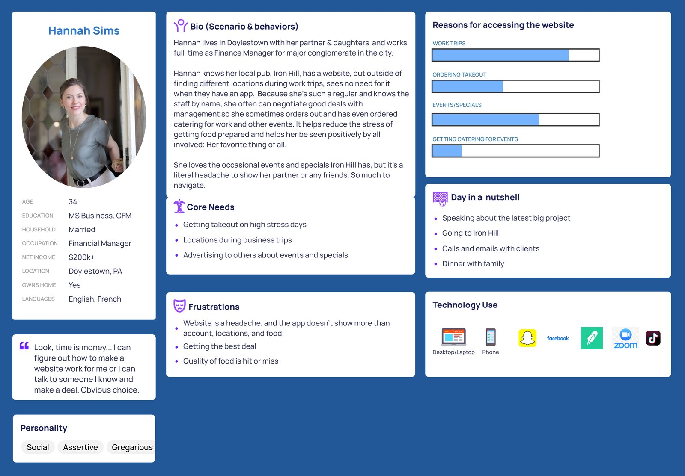
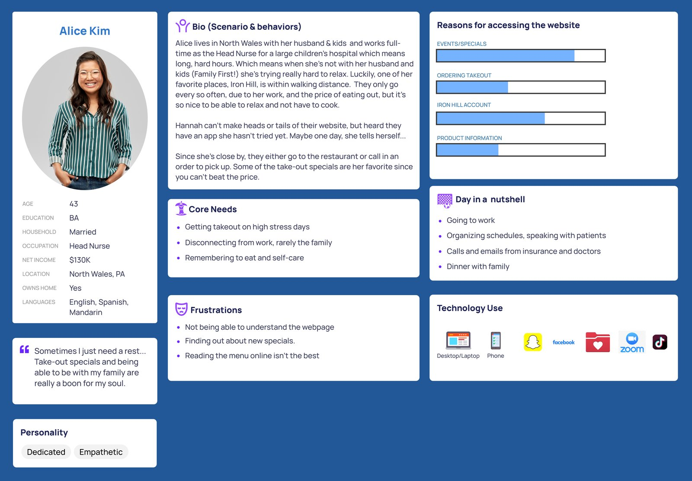
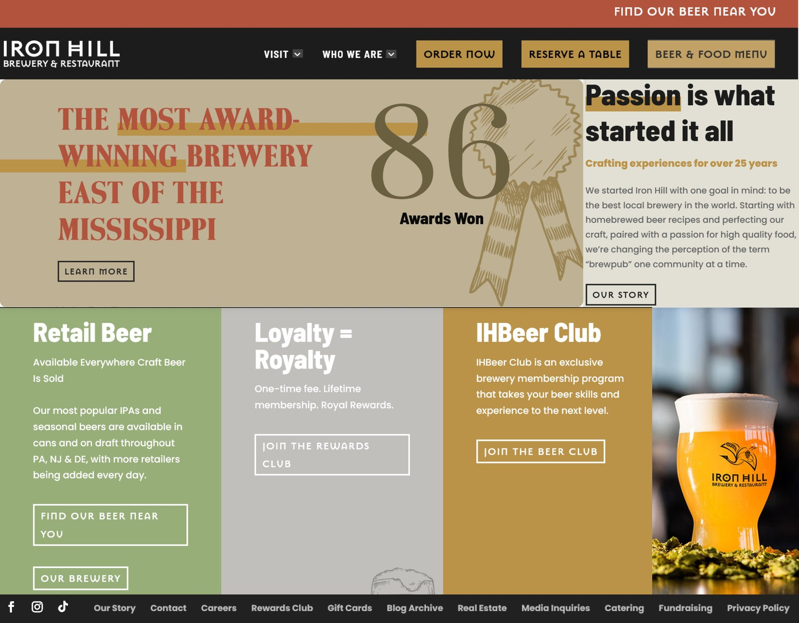
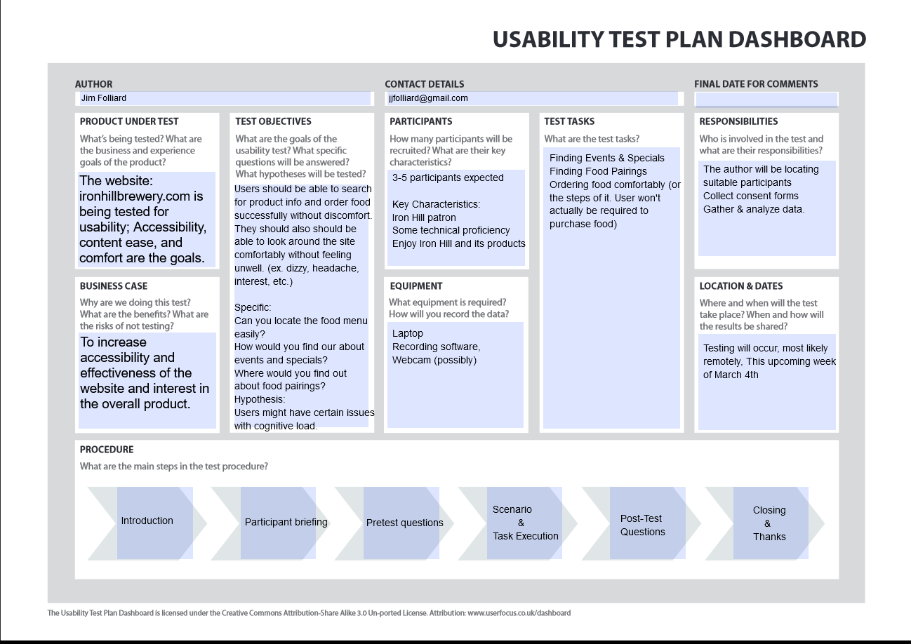

Iron Hill Brewery Website Redesign
A solo UX redesign of a regional brewery and restaurant website, focused on navigation clarity, menu accessibility, and information hierarchy.
- Role
- UX research, UX design, UI design, usability testing
- Team
- Solo project
- Timeline
- 8 weeks
- Tools
- Miro, Figma, PowerPoint, Ziro
The problem
The Iron Hill Brewery & Restaurant website felt scattered and inconsistent. Key information like allergen-sensitive and gluten-free menus was buried, events and specials were hard to find, and the ordering flow opened in a separate tab with a completely different design, breaking users' mental model mid-task.
A heuristic evaluation using Nielsen's 10 heuristics confirmed these pain points, with several interactions scoring a severity of 2 to 3 on the usability scale.
The approach
Starting with a formal heuristic evaluation and user research interviews, I built three personas representing the real range of Iron Hill patrons, from a regular blue-collar lunch visitor to a high-income professional using the site for catering and work events.
Research revealed that all three user types struggled with the same core issues: navigation felt inconsistent, the menu was difficult to parse online, and events were nearly impossible to discover without already knowing where to look.
The redesign prioritized clear navigation, surfaced allergen and dietary information, and unified the visual experience across ordering and browsing flows.
User research and heuristic evaluation
I conducted a Nielsen's 10 Heuristics evaluation of the existing site, rating issues on a severity scale from 0 (no problem) to 4 (unusable).
This was followed by user interviews with Iron Hill patrons, from which I developed three distinct personas representing the site's core audience: working-class regulars, busy professionals seeking quick takeout, and high-income social users interested in events and catering.



Key findings
- Navigation was inconsistent: ordering launched a new tab with a different visual design, breaking the user's flow
- Allergen-sensitive and gluten-free menu options were buried, creating barriers for users with dietary needs
- Events and daily specials were difficult to discover without prior knowledge of the site structure
- All three persona types shared the same core frustration: the site felt scattered and hard to read
Redesign and usability testing
The redesign addressed navigation, visual hierarchy, and dietary information access across the full site, not just the homepage.
I ran remote usability testing sessions over Zoom with 4 to 6 Iron Hill patrons, testing tasks like finding events, locating food pairings, and navigating the menu.
One session had to be paused mid-test when Iron Hill temporarily removed their daily special from the live site during testing, a real-world reminder that research doesn't always go as planned. The special was eventually restored.
Findings from testing informed refinements to the navigation structure and content hierarchy.

